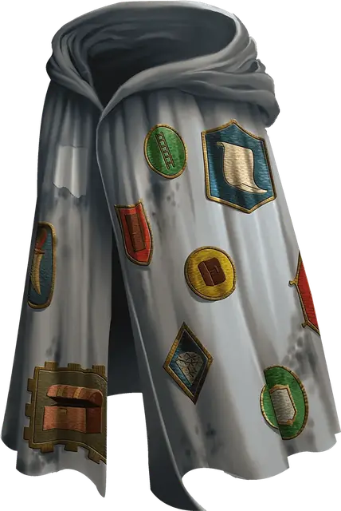

Мантия полезных предметов
Robe of Useful Items
Чудесный предмет, необычный

Рекомендованная стоимость 400 зм
Эта мантия покрыта заплатами ткани различных форм и цветов. Пока вы носите эту мантию, вы можете действием Магия оторвать одну из заплат, превращая её в объект или существо, которые на ней изображены. Мантия становится обычной одеждой, как только будет оторвана последняя заплата.
На мантии есть следующие изображения (по две заплаты с каждым):
- Верёвка (свёрнутая кольцом)
- Зеркало
- Кинжал
- Мешок
- Направленный фонарь (заполненный и зажжённый)
- Шест
Кроме того, на мантии есть ещё 4к4 других заплат. Мастер выбирает эти заплаты или определяет их случайным образом бросками по следующей таблице.
| 1к100 | Заплата |
| 01–08 | Мешочек, содержащий 100 ЗМ |
| 09–15 | Серебряный ларец (длиной 1 фут, шириной и глубиной 6 дюймов) стоимостью 500 ЗМ |
| 16–22 | Железная дверь (вплоть до 10 футов шириной и высотой, с засовом с одной из сторон по вашему выбору), которую вы можете разместить в проёме, до которого можете дотянуться; она подстраивается под проём, прикрепляясь и навешиваясь сама |
| 23–30 | 10 самоцветов стоимостью 100 ЗМ каждый |
| 31–44 | Деревянная лестница (длиной 24 фута) |
| 45–51 | Ездовая лошадь с седлом для верховой езды |
| 52–59 | Открытая яма (10-футовый Куб), которую вы можете разместить на земле в пределах 10 футов от себя |
| 60–68 | 4 Зелья лечения |
| 69–75 | Лодка (длиной 12 футов) |
| 76–83 | Свиток заклинания, содержащий одно заклинание 1-го, 2-го или 3-го уровня (на ваш выбор) |
| 84–90 | 2 Мастифа |
| 91–96 | Окно (2 фута на 4 фута, глубиной до 2 футов), которое вы можете разместить на вертикальной поверхности, до которой можете дотянуться |
| 97–00 | Портативный таран |